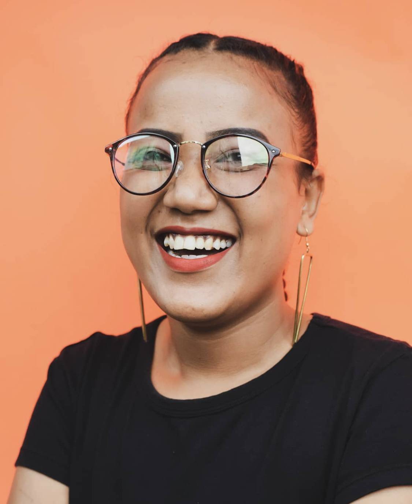

This page outlines my goals, the skills I want to develop, and the resources I will use to support my growth.
Goals overview: My goal is to continue growing both academically and personally. I aim to improve my knowledge in technology and coding while developing skills that will help me solve problems and think creatively. I also want to become more confident in sharing ideas and working with others
Key objectives: Enhancing my coding skills and learning about the different programming languages and tools, strengthening my creativity when solving problems, and improving my communication abilities to help me work better in teams.
I have several career aspirations that include: